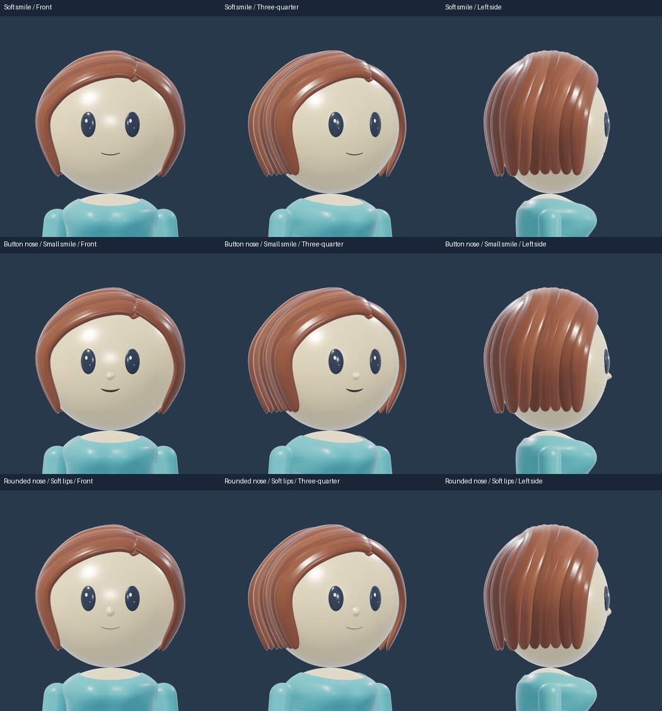
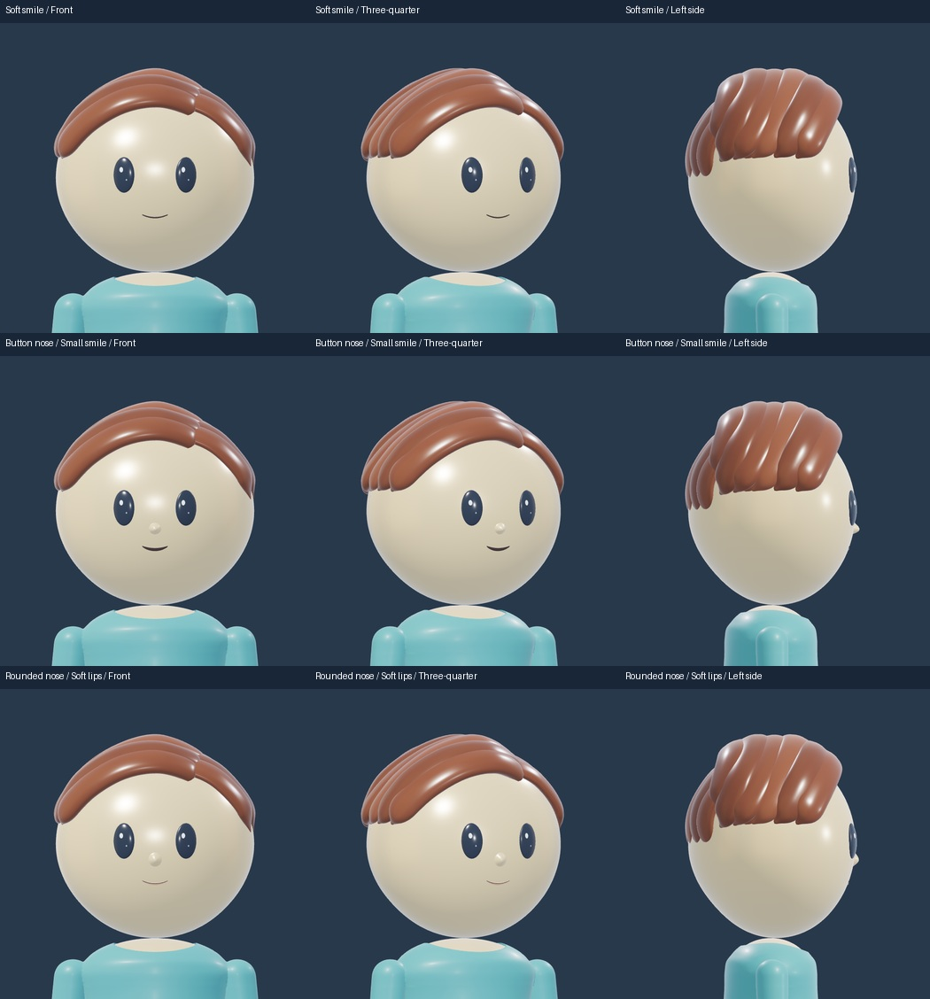
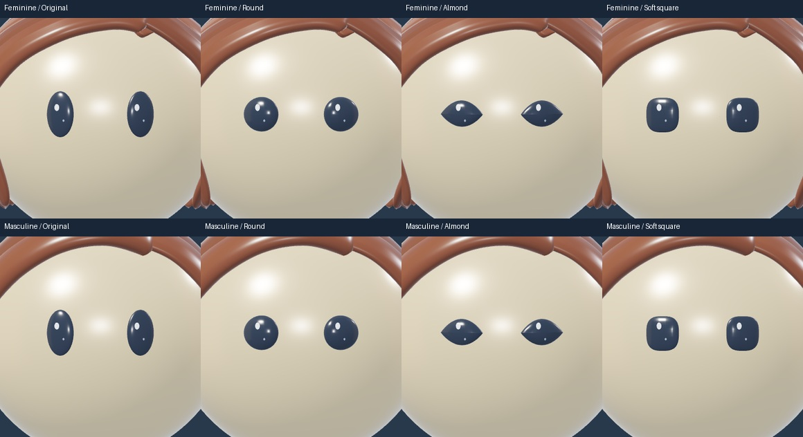
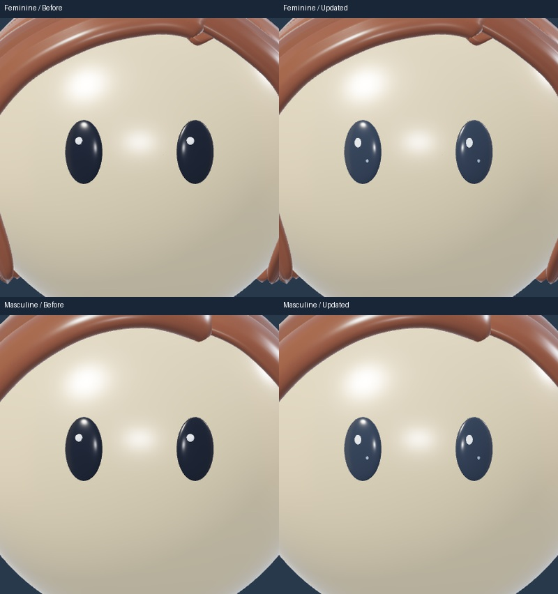
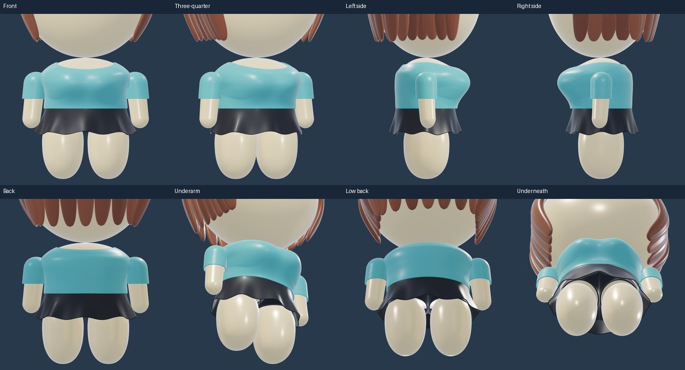
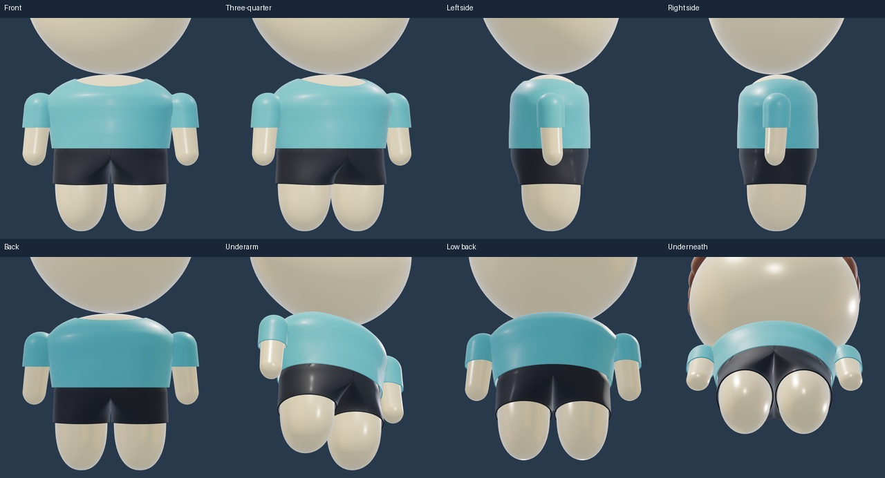

AVATAR STUDY · 181
Relaxed arms and face candidates
Softer arm positioning, connected shirt underarms and reflective charcoal eyes. Explore optional noses and mouths on either build. The current face remains available with both set to None.
 Blender render · T-shirt / Skirt / Light warm
Blender render · T-shirt / Skirt / Light warmLoad 3D to mix outfits, rotate and zoom. Each build remembers its selections.
Rotate, zoom and compare with one consistent 3D lighting setup. Toggle the top to inspect the relaxed arm attachment. This preview covers the T-shirt; the rest of the wardrobe still needs the selected arm fit.
Optional face details
These combinations are starting points. Nose and mouth can also be mixed independently.


Eyes · same shapes, clearer reflections


Arms and shirt joins


Files and scope
Face details are candidates. Head shape, hair, body centre, legs and palette remain the same. The T-shirt has separate neck, hem and sleeve openings. Other garments remain in progress.